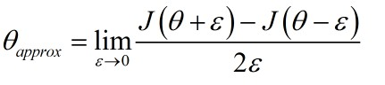
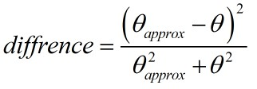

今天完成了第二门课的第一周内容，主要是三个方面：
- 偏差和方差的来源，以及减小他们的方法——正则化
- 梯度爆炸/消失的原因以及解决方法——Xavier随机初始化
- 梯度检验
下面说一下各自的算法实现
一、偏差以及方差的消除
1.1 L2正则化
L2正则化主要是在损失函数以及梯度变化量上面进行修改，损失函数修改之后的函数如下：
损失函数
梯度变化量修改之后如下
梯度变换量
先实现成本函数的计算，该神经网络是一个3层的神经网络
1
2
3
4
5
6
7
8
9
10
11
12
13
14
15
| def compute_cost_with_regularization(A3, Y, parameters, lambd):
m = Y.shape[1]
W1 = parameters["W1"]
W2 = parameters["W2"]
W3 = parameters["W3"]
cross_entropy_cost = compute_cost(A3, Y)
L2_regularization_cost = lambd * (np.sum(np.square(W1)) + np.sum(np.square(W2)) + np.sum(np.square(W3))) / (2 * m)
cost = cross_entropy_cost + L2_regularization_cost
return cost
|
然后是梯度变化量
1
2
3
4
5
6
7
8
9
10
11
12
13
14
15
16
17
18
19
20
21
22
23
24
25
| def backward_propagation_with_regularization(X, Y, cache, lambd):
m = X.shape[1]
(Z1, A1, W1, b1, Z2, A2, W2, b2, Z3, A3, W3, b3) = cache
dZ3 = A3 - Y
dW3 = 1./m * np.dot(dZ3, A2.T) + lambd * W3 / m
db3 = 1./m * np.sum(dZ3, axis=1, keepdims = True)
dA2 = np.dot(W3.T, dZ3)
dZ2 = np.multiply(dA2, np.int64(A2 > 0))
dW2 = 1./m * np.dot(dZ2, A1.T) + lambd * W2 / m
db2 = 1./m * np.sum(dZ2, axis=1, keepdims = True)
dA1 = np.dot(W2.T, dZ2)
dZ1 = np.multiply(dA1, np.int64(A1 > 0))
dW1 = 1./m * np.dot(dZ1, X.T) + lambd * W1 / m
db1 = 1./m * np.sum(dZ1, axis=1, keepdims = True)
gradients = {"dZ3": dZ3, "dW3": dW3, "db3": db3,"dA2": dA2,
"dZ2": dZ2, "dW2": dW2, "db2": db2, "dA1": dA1,
"dZ1": dZ1, "dW1": dW1, "db1": db1}
return gradients
|
1.2 dropout正则化
dropout正则化的主要思路是随机消除每一层中的某一些神经单元，以此来减少对输入的以来，从来减轻过拟合——也即方差过大的问题。使用的方法流程如下
- 随机初始化一个和每一层的输出
A矩阵同纬度的矩阵D
- 根据阈值
keep_prob将D中的元素变成0和1，然后再与A相乘来消除A中某些层中的某一些节点
- 将
A中的均值进行复原
同时，dA也需要进行相同的操作，流程与上面的一致。需要注意的是，我们不对输入和输出层进行dropout正则化
1
2
3
4
5
6
7
8
9
10
11
12
13
14
15
16
17
18
19
20
21
22
23
24
25
26
27
28
29
30
31
32
33
34
| def forward_propagation_with_dropout(X, parameters, keep_prob = 0.5):
W1 = parameters["W1"]
b1 = parameters["b1"]
W2 = parameters["W2"]
b2 = parameters["b2"]
W3 = parameters["W3"]
b3 = parameters["b3"]
Z1 = np.dot(W1, X) + b1
A1 = relu(Z1)
D1 = np.random.rand(A1.shape[0], A1.shape[1])
D1 = (D1 <= keep_prob)
A1 = A1 * D1
A1 = A1 / keep_prob
Z2 = np.dot(W2, A1) + b2
A2 = relu(Z2)
D2 = np.random.rand(A2.shape[0], A2.shape[1])
D2 = (D2 <= keep_prob)
A2 = A2 * D2
A2 = A2 / keep_prob
Z3 = np.dot(W3, A2) + b3
A3 = sigmoid(Z3)
cache = (Z1, D1, A1, W1, b1, Z2, D2, A2, W2, b2, Z3, A3, W3, b3)
return A3, cache
|
其次是对dA进行相同操作，需要注意的是dA1和A1使用的应该是相同的随机矩阵D1
1
2
3
4
5
6
7
8
9
10
11
12
13
14
15
16
17
18
19
20
21
22
23
24
25
26
27
28
29
30
31
| def backward_propagation_with_dropout(X, Y, cache, keep_prob):
m = X.shape[1]
(Z1, D1, A1, W1, b1, Z2, D2, A2, W2, b2, Z3, A3, W3, b3) = cache
dZ3 = A3 - Y
dW3 = 1./m * np.dot(dZ3, A2.T)
db3 = 1./m * np.sum(dZ3, axis=1, keepdims = True)
dA2 = np.dot(W3.T, dZ3)
dA2 = dA2 * D2
dA2 = dA2 / keep_prob
dZ2 = np.multiply(dA2, np.int64(A2 > 0))
dW2 = 1./m * np.dot(dZ2, A1.T)
db2 = 1./m * np.sum(dZ2, axis=1, keepdims = True)
dA1 = np.dot(W2.T, dZ2)
dA1 = dA1 * D1
dA1 = dA1 / keep_prob
dZ1 = np.multiply(dA1, np.int64(A1 > 0))
dW1 = 1./m * np.dot(dZ1, X.T)
db1 = 1./m * np.sum(dZ1, axis=1, keepdims = True)
gradients = {"dZ3": dZ3, "dW3": dW3, "db3": db3,"dA2": dA2,
"dZ2": dZ2, "dW2": dW2, "db2": db2, "dA1": dA1,
"dZ1": dZ1, "dW1": dW1, "db1": db1}
return gradients
|
二、梯度爆炸/消失的原因以及解决方法
梯度爆炸以及消失的主要是由W的值以及网络深度导致的，在比较深的网络里面，W增长速度是幂级别的，而Z=WX+b，这样很容易导致Z过大导致梯度变化量过小而降低学习速度。一个常用的解决方法是Xavier初始化，公式如下
初始化公式
这个方法实现起来比较简单。只需要在初始化W的时候乘上一个因子即可，常用的激活函数是Relu函数，tanh函数与其类似，因此只实现Relu函数
1
2
3
4
5
6
7
8
9
10
| def initialize_parameters_he(layers_dims):
parameters = {}
L = len(layers_dims) - 1
for l in range(1, L + 1):
parameters['W' + str(l)] = np.random.randn(layers_dims[l], layers_dims[l - 1]) * np.sqrt(2 / layers_dims[l - 1])
parameters['b' + str(l)] = np.zeros((layers_dims[l], 1))
return parameters
|
三、梯度检验
梯度检验的目的是确认反向传播的正确性，因为反向传播较为复杂，很容易出现不知名bug。梯度检验的流程主要如下：
- 将
W和b合成一个新的变量θ
- 利用公式计算
θ近似值

- 根据反向传播计算
W和b并合成为新的的变量θ
- 计算
θ近似值与真实值之间的差距，如果小于某一个数，则认为计算正确，否则就需要检验所有的反向计算是否出错

由于梯度检验的复杂性，本文实现的是较为简单的梯度检验算法J=θx。需要注意的是，梯度检验只能用于debug，不能用于训练，因为梯度检验需要的时间很长。
1
2
3
4
5
6
7
8
9
10
11
12
13
14
15
16
17
18
19
20
21
| def gradient_check(x, theta, epsilon = 1e-7):
thetaplus = theta + epsilon
thetaminus = theta - epsilon
J_plus = x * thetaplus
J_minus = x * thetaminus
gradapprox = (J_plus - J_minus) / (2 * epsilon)
grad = x
numerator = np.linalg.norm(grad - gradapprox)
denominator = np.linalg.norm(grad) + np.linalg.norm(gradapprox)
difference = numerator / denominator
if difference < 1e-7:
print ("The gradient is correct!")
else:
print ("The gradient is wrong!")
return difference
|
总结
这周的课程主要是对神经网络的优化，包括Xavier初始化，以及如何debug等，以加快机器学习的速度，减少错误率。下周将学习全新的优化算法——MiniBatch梯度下降法。

![微信分享二维码]()